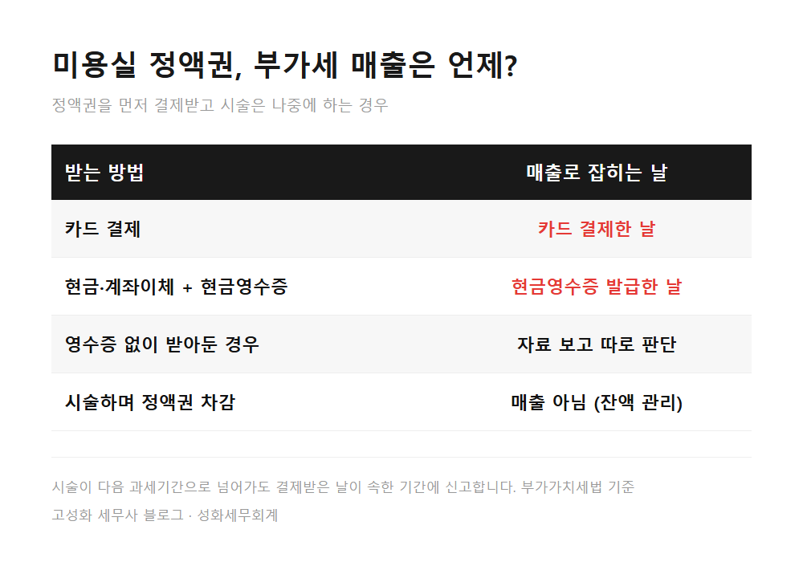
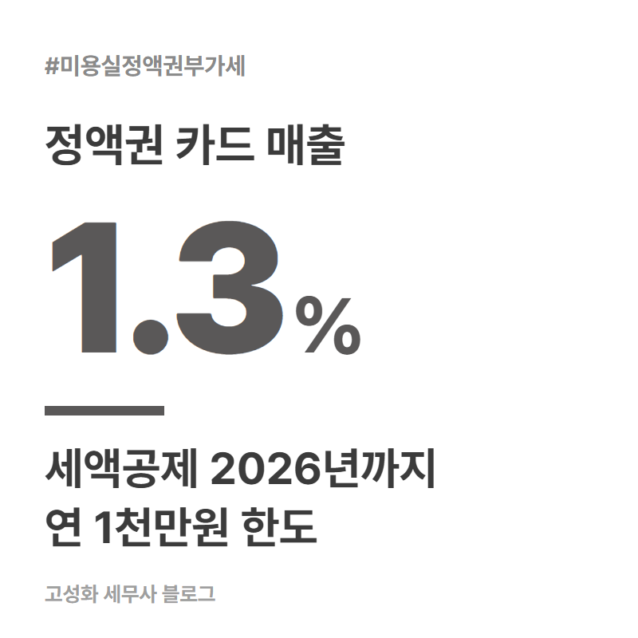
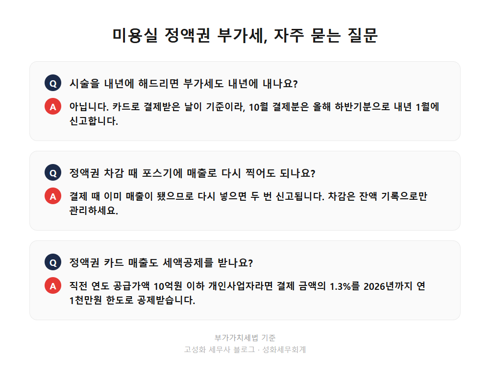

미용실 정액권 카드결제 부가세 신고 시기는 결제일

가을 이벤트로 정액권을 한꺼번에 판 달, 카드 매출이 평소의 두 배로 찍힙니다. 시술은 내년까지 나눠서 해드려야 하는데 부가세는 언제 기준으로 내는 걸까요? 미용실이나 네일샵 원장님들께 꽤 자주 받는 질문입니다.
부가세는 시술한 날이 아니라 정액권을 카드로 결제한 날의 매출로 잡힙니다. 시술이 내년 봄까지 이어져도 10월에 결제받았다면 10월 매출이고, 올해 하반기분으로 내년 1월에 신고합니다.
이 글을 보고 계신 분은 ① 정액권·회원권을 파는 미용실이나 네일샵 원장님 ② 이벤트 달에 카드 매출이 몰려 부가세가 걱정되시는 분 ③ 포스기에서 정액권 차감을 어떻게 처리해야 할지 헷갈리시는 분일 겁니다.
- 미용실 정액권 부가세, 시술일이 아니라 결제일 기준인 이유
- 정액권 1천만원 팔았다면, 숫자로 넣어보면
- 원장님들이 실제로 자주 놓치는 부분
한눈에 보기



자주 묻는 질문
정액권을 팔고 시술은 내년에 해드리면, 부가세는 내년에 내나요?
아닙니다. 카드로 결제받은 날이 공급시기라 결제한 달이 속한 과세기간에 신고합니다. 10월 결제분이면 올해 하반기분으로 내년 1월에 신고합니다.
정액권 차감할 때 포스기에 매출로 다시 찍어도 되나요?
이미 결제 시점에 매출로 잡혔기 때문에 차감 때 다시 매출로 넣으면 같은 금액이 두 번 신고됩니다. 차감은 잔액 기록으로만 관리하셔야 합니다.
정액권 카드 매출도 카드매출 세액공제를 받나요?
미용업 개인사업자로서 직전 연도 공급가액이 10억원 이하라면 카드 결제 금액의 1.3%를 2026년까지 연 1천만원 한도로 공제받습니다.
정리하면
미용실 정액권 부가세는 시술일이 아니라 카드로 결제받은 날 기준입니다. 현금으로 받았다면 현금영수증을 발급한 날이 기준이 되고, 결제받은 달의 과세기간에 매출로 신고합니다.
어려운 건 실제 장부입니다. 결제일 매출, 차감 내역, 중간 환불, 영수증 없이 받은 현금까지 섞이면 내 매장 매출이 얼마로 잡혀야 맞는지 직접 맞춰보기가 쉽지 않습니다.
이미 지난 신고에서 정액권 매출을 두 번 잡았거나 빠뜨린 것 같아도 늦었다고 단정하실 필요는 없습니다. 바로잡을 수 있는 방법이 남아 있는 경우가 많으니, 포스기 매출 내역과 카드 매출 자료만 보내주셔도 어디가 어긋났는지 봐드리겠습니다.
본문 전체와 근거 조문은 블로그에서 확인하실 수 있습니다.